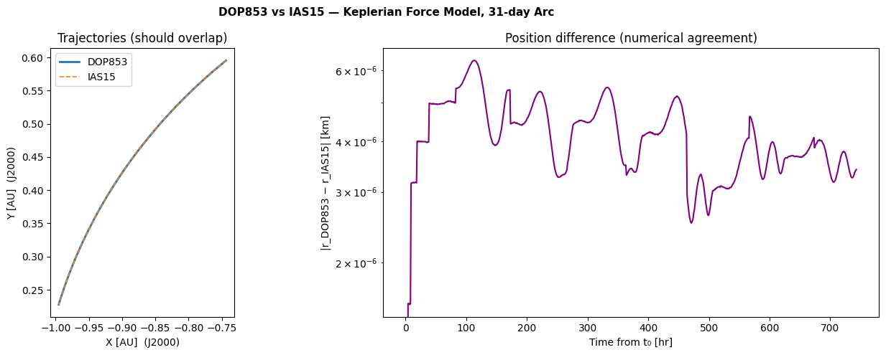

# Propagation and Trajectory#
Last revised 2026
What this notebook covers#
The full propagation pipeline: defining the state, choosing a force model, running the integrator, writing the result to a SPICE SPK kernel, and visualizing the trajectory.
Topics#
# |
Topic |
|---|---|
1 |
Spacecraft and initial conditions |
2 |
|
3 |
Force models — Keplerian, third-body, cannonball SRP, N-plate SRP, spherical harmonics |
4 |
|
5 |
IAS15 integrator — comparison with DOP853 |
0. Imports and Setup#
[1]:
import scarabaeus as scb
import supplementary as supp
import time, warnings
from pathlib import Path
import numpy as np
# load tutorial data
data = supp.load_data()
# define units and frames
kg, m, km, sec, hr, day, rad, deg, N, unitless = scb.Units.get_units(
["kg", "m", "km", "sec", "hr", "day", "rad", "deg", "N", "unitless"]
)
frame = scb.Frame('J2000')
# load kernels
scb.SpiceManager.clear_kernels()
scb.SpiceManager.load_kernel_from_mkfile(data.mk.path)
SCB supplementary data up to date.
1. Spacecraft and Initial Conditions#
Spacecraft#
Spacecraft bundles the physical properties used by the equations of motion.
Parameter |
Value |
Role |
|---|---|---|
|
2000 kg (1500 dry + 500 fuel) |
Gravitational and SRP acceleration |
|
1×10⁻⁶ km² |
Cannonball SRP cross-section |
|
1.5 |
Reflectivity coefficient |
|
generic 11-plate config |
Geometry-aware SRP (§3.4) |
|
|
Body-frame orientation rule |
|
|
Body axis pointing toward Sun |
[2]:
dry_mass = scb.ArrayWUnits(1500.0, kg)
fuel_mass = scb.ArrayWUnits(500.0, kg)
area = scb.ArrayWUnits(1e-6, km**2)
ref_coeff = scb.ArrayWUnits(1.5, unitless)
# ── N-plate model ─────────────────────────────────────────────────
# n_plate = scb.nPlateModel(
# 'data/dynamic_setup/nplate_coefficients/generic_nplate_config.json'
# )
n_plate = scb.nPlateModel(data.OREx_nplate.path)
# ── spacecraft ────────────────────────────────────────────────────
orcca_sc = scb.Spacecraft(
name = 'ORCCA_SC',
spice_id = -1000,
tot_mass = dry_mass + fuel_mass,
area = area,
ref_coeff = ref_coeff,
n_plate_model = n_plate,
attitudeMode = 'nadir_pointing_to_sun',
nadirPointingAxis= np.array([-1, 0, 0]),
)
print(orcca_sc)
-1000 ORCCA_SC
Initial Conditions and Time Span#
The scenario: heliocentric orbit near 1 AU, 2021 January 1 → February 1, sampled every hour. EpochArray with sys="TDB" wraps the SPICE ET values so the propagator can iterate over them.
[3]:
sun = scb.CelestialBody.from_constants('SUN')
# ── initial position and velocity (J2000, Sun-centred) ────────────
pos0 = scb.ArrayWFrame(
np.array([-1.1123095885148e8, 8.9094345479316e7, 3.8656500948069e7]), km, frame
)
vel0 = scb.ArrayWFrame(
np.array([-20.6936999825159, -16.7800270812616, -6.6437327193572]), km / sec, frame
)
# ── epoch array: 2021-Jan-01 → 2021-Feb-01, 1-hour steps
epochs = scb.EpochArray.interval('2021 January 1, 00:00:00', '2021 February 1, 00:00:00',
dt = scb.ArrayWUnits(1, hr), sys = 'TDB')
print(f"Span : {len(epochs)} epochs, "
f"{epochs.duration(day)}-day arc, 1-hour step")
Span : 744 epochs, 30.958333333333332 day-day arc, 1-hour step
2. StateDefinition Combinations#
A StateDefinition is an ordered list of state components. Each component is a 6-tuple:
(name, dimension, estimability, dynamics_type, body, initial_value)
The two key fields — estimability and dynamics_type — jointly control how a component interacts with the propagator and the orbit-determination filter:
|
|
ODE integrates? |
Filter corrects? |
Typical use |
|---|---|---|---|---|
|
|
✓ |
✓ |
Position, velocity |
|
|
✗ (constant) |
✓ |
SRP scale η, drag Cd, biases |
|
|
✗ |
✗ (cov. only) |
Schmidt–Kalman consider parameters |
Two Construction Styles#
StateDefinition supports a component API (explicit tuples) and a fluent API (method chaining). Both produce identical objects; choose whichever is more readable.
# Component style (explicit)
state = scb.StateDefinition.from_components([
("position", 3, "estimated", "dynamic", sc, pos0),
("velocity", 3, "estimated", "dynamic", sc, vel0),
("eta_srp", 1, "estimated", "static", sc, eta),
])
# Fluent style (chained)
state = (
scb.StateDefinition()
.position(sc, pos0)
.velocity(sc, vel0)
.param("eta_srp", sc, eta, estimation="estimated", dynamics="static")
)
[4]:
eta_val = scb.ArrayWFrame(scb.ArrayWUnits(np.array([1.0]), None), frame)
# ── 1. estimated + dynamic (standard pos/vel, propagated and filter-correctable)
state_dyn = scb.StateDefinition.from_components([
("position", 3, "estimated", "dynamic", orcca_sc, pos0),
("velocity", 3, "estimated", "dynamic", orcca_sc, vel0),
])
# ── 2. estimated + static (SRP scale: carried constant, filter-correctable)
state_eta_est = scb.StateDefinition.from_components([
("position", 3, "estimated", "dynamic", orcca_sc, pos0),
("velocity", 3, "estimated", "dynamic", orcca_sc, vel0),
("eta_srp", 1, "estimated", "static", orcca_sc, eta_val),
])
# ── 3. considered + static (Schmidt parameter: uncertainty inflates covariance,
# but value is never updated by the filter)
state_eta_con = scb.StateDefinition.from_components([
("position", 3, "estimated", "dynamic", orcca_sc, pos0),
("velocity", 3, "estimated", "dynamic", orcca_sc, vel0),
("eta_srp", 1, "considered", "static", orcca_sc, eta_val),
])
# ── fluent style — equivalent to state_eta_est ────────────────────
state_fluent = (
scb.StateDefinition()
.position(orcca_sc, pos0)
.velocity(orcca_sc, vel0)
.param("eta_srp", orcca_sc, eta_val, estimation="estimated", dynamics="static")
)
# ── summary ───────────────────────────────────────────────────────
sv_dyn = scb.StateArray(epoch=epochs[0], origin=sun, state=state_dyn)
sv_eta_est = scb.StateArray(epoch=epochs[0], origin=sun, state=state_eta_est)
sv_eta_con = scb.StateArray(epoch=epochs[0], origin=sun, state=state_eta_con)
for label, sv in [
("est+dynamic (pos/vel)", sv_dyn),
("est+static (eta_srp est)", sv_eta_est),
("considered (eta_srp con)", sv_eta_con),
]:
print(f" {label:<38} state dim = {sv.size}")
est+dynamic (pos/vel) state dim = 6
est+static (eta_srp est) state dim = 7
considered (eta_srp con) state dim = 7
3. Force Models and Propagation#
Every propagation is assembled from three components:
``StateArray`` — initial state at t₀ (wraps a
StateDefinition)``ForceModelTranslation`` — accumulates accelerations at each integration step
``Propagator`` — drives the ODE integrator over
tspan, fillspropagated_state_array
The five examples below add force-model terms progressively.
Example |
Force model |
Extra flag |
|---|---|---|
1 |
Central-body gravity (Sun) only |
— |
2 |
|
|
3 |
|
|
4 |
|
|
5 |
|
|
Two-body (Keplerian)#
Only the Sun’s point-mass gravity — the trajectory follows a Keplerian conic. This is the baseline all other examples are compared against.
[5]:
sv1 = scb.StateArray(epoch=epochs[0], origin=sun, state=state_dyn)
fm1 = scb.ForceModelTranslation(primary_body=orcca_sc)
prop1 = scb.Propagator(primary_body=orcca_sc, state_vector=sv1,
tspan=epochs, force_models=fm1)
print("── Example 1: Keplerian ──────────────────────────────────")
prop1.propagate()
── Example 1: Keplerian ──────────────────────────────────
================================================================================
Starting propagation...
================================================================================
Integrating: 100%|███████████████████████████████████████████| 2674800.00/2674800.00 s [00:00<00:00]
=================== DOP853 integration complete. ==================
Propagation complete.
Third-body Perturbations#
third_bodies accepts SPICE body-name strings. SCB queries their positions from the ephemeris at each step and adds the point-mass acceleration. Inner planets (Mercury, Venus, Earth) are the dominant third-body terms near 1 AU.
[6]:
third_bodies = ['MERCURY', 'VENUS', 'EARTH']
sv2 = scb.StateArray(epoch=epochs[0], origin=sun, state=state_dyn)
fm2 = scb.ForceModelTranslation(primary_body=orcca_sc, third_bodies=third_bodies)
prop2 = scb.Propagator(primary_body=orcca_sc, state_vector=sv2,
tspan=epochs, force_models=fm2)
print("── Example 2: Third-body ─────────────────────────────────")
prop2.propagate()
── Example 2: Third-body ─────────────────────────────────
================================================================================
Starting propagation...
================================================================================
Integrating: 100%|███████████████████████████████████████████| 2674800.00/2674800.00 s [00:00<00:00]
=================== DOP853 integration complete. ==================
Propagation complete.
Cannonball SRP#
The spacecraft is treated as a sphere: \(\mathbf{a}_\text{SRP} = -(r_\text{AU}/r)^2\, P_\odot\,(A/m)\,C_r\,\hat{\mathbf{r}}_\odot\)
eta_srp is a static estimated scale factor included in the state so a filter can solve for it to absorb SRP model error without re-propagating (see §2, combination 2).
[7]:
sv3 = scb.StateArray(epoch=epochs[0], origin=sun, state=state_eta_est)
fm3 = scb.ForceModelTranslation(primary_body=orcca_sc, cannonball_SRP=True)
prop3 = scb.Propagator(primary_body=orcca_sc, state_vector=sv3,
tspan=epochs, force_models=fm3)
print("── Example 3: Cannonball SRP ─────────────────────────────")
prop3.propagate()
── Example 3: Cannonball SRP ─────────────────────────────
================================================================================
Starting propagation...
================================================================================
Integrating: 100%|███████████████████████████████████████████| 2674800.00/2674800.00 s [00:00<00:00]
=================== DOP853 integration complete. ==================
Propagation complete.
N-plate SRP#
Decomposes the spacecraft into flat plates; at each step, the illuminated plates are identified and their SRP forces summed. More accurate than cannonball for non-spherical geometries. The attitude mode (nadir_pointing_to_sun) defines body-frame orientation.
The generic config used here does not require a C-kernel; the
UserWarningabout the missing attitude kernel is suppressed below.
[8]:
sv4 = scb.StateArray(epoch=epochs[0], origin=sun, state=state_dyn)
fm4 = scb.ForceModelTranslation(primary_body=orcca_sc, nplate_SRP=True)
prop4 = scb.Propagator(primary_body=orcca_sc, state_vector=sv4,
tspan=epochs, force_models=fm4)
print("── Example 4: N-plate SRP ────────────────────────────────")
with warnings.catch_warnings():
warnings.simplefilter('ignore', UserWarning)
prop4.propagate()
── Example 4: N-plate SRP ────────────────────────────────
================================================================================
Starting propagation...
================================================================================
Integrating: 0%| | 0.00/2674800.00 s [00:00<?]/Users/zael5647/scarabaeus/src/scarabaeus/dynamics/ForceModelTranslation.py:849: RuntimeWarning: nadir_pointing_to_sun attitude mode not yet fully implemented for nPlateSRP. It currently produces incorrect partial derivatives.
model_acceleration = self.force_models[model].compute_acceleration(
Integrating: 100%|███████████████████████████████████████████| 2674800.00/2674800.00 s [00:00<00:00]
=================== DOP853 integration complete. ==================
Propagation complete.
Spherical-Harmonic Gravity#
Augments the central-body gravity with normalized Stokes coefficients \((C_{nm}, S_{nm})\) to a chosen degree and order. Here the SH body is Earth (not the Sun), which is physically correct for an Earth-orbiting spacecraft. For the heliocentric orbit used throughout this notebook the SH acceleration is tiny but the API usage is identical.
[9]:
sph = {
'order' : 3,
'cs_file' : data.earth_sph_config.path,
'body' : scb.CelestialBody.from_constants('EARTH'),
'norm_flag': True,
}
sv5 = scb.StateArray(epoch=epochs[0], origin=sun, state=state_dyn)
fm5 = scb.ForceModelTranslation(
primary_body=orcca_sc,
sph_harm=True,
sph_harm_order =sph['order'],
sph_harm_cs_file =sph['cs_file'],
sph_harm_body =sph['body'],
sph_harm_norm_flag=sph['norm_flag'],
)
prop5 = scb.Propagator(primary_body=orcca_sc, state_vector=sv5,
tspan=epochs, force_models=fm5)
print("── Example 5: Spherical harmonics ───────────────────────")
prop5.propagate()
/Users/zael5647/scarabaeus/src/scarabaeus/dynamics/SphericalHarmonicsGravity.py:166: RuntimeWarning: SPH gravity body is 'Earth', but propagation origin is 'Sun'. The model will compute the relative vector r_eval/sph = r_eval/origin - r_sph/origin using SPICE.
warnings.warn(
── Example 5: Spherical harmonics ───────────────────────
================================================================================
Starting propagation...
================================================================================
Integrating: 100%|███████████████████████████████████████████| 2674800.00/2674800.00 s [00:00<00:00]
=================== DOP853 integration complete. ==================
Propagation complete.
4. Trajectory and Visualization#
scb.Trajectory wraps propagated_state_array and writes it to a SPICE SPK kernel via write_to_spk. Once furnised, any SPICE-aware tool can query the spacecraft’s state at arbitrary epochs within the propagation window.
Below: the Keplerian trajectory is written, furnised, and plotted.
[10]:
AU_km = 1.496e8 # km per AU
# ── write Keplerian trajectory to SPK ────────────────────────────
tut_result_path = Path.cwd() / 'tutorial_results/prop_and_traj'
tut_result_path.mkdir(parents = True, exist_ok = True)
spk_path = tut_result_path / 'keplerian_trajectory.bsp'
if spk_path.exists(): spk_path.unlink() # remove previous spk file if it exists
traj1 = scb.Trajectory(state_array=prop1.propagated_state_array)
traj1.write_to_spk(str(spk_path))
scb.SpiceManager.load_kernel_from_mkfile(str(spk_path))
print(f"SPK written to {str(spk_path)}")
# ── query positions at each epoch ────────────────────────────────
positions = np.array([
scb.SpiceManager.get_state(str(orcca_sc.spice_id), et, frame, sun).values[0:3]
for et in epochs.times.values
]) / AU_km # → AU
# plot
supp.supp_plotting.plot_simple_orbit(positions)
SPK written to /Users/zael5647/scarabaeus/docs/online_documentation/sphinx_files/_collections/tutorials/tutorial_results/prop_and_traj/keplerian_trajectory.bsp

Force Model Position Comparison#
The table below quantifies how much each perturbation shifts the final position after 31 days, relative to the Keplerian baseline.
[11]:
def final_pos_km(prop, label):
tmp_bsp = Path.cwd() / f'tutorial_results/_tmp_{label}.bsp'
if tmp_bsp.exists(): tmp_bsp.unlink()
scb.Trajectory(state_array=prop.propagated_state_array).write_to_spk(str(tmp_bsp))
scb.SpiceManager.load_kernel_from_mkfile(str(tmp_bsp))
pos = scb.SpiceManager.get_state(
str(orcca_sc.spice_id), epochs.times.values[-1], frame, sun
).values[0:3]
tmp_bsp.unlink()
return np.array(pos)
labels = ['Keplerian', 'Third-body', 'Cannonball SRP', 'N-plate SRP', 'Sph. harmonics']
pos_f = [final_pos_km(p, f'ex{i+1}') for i, p in enumerate([prop1, prop2, prop3, prop4, prop5])]
pos_kep = pos_f[0]
print(f"\n {'Force model':<20} {'|Δr| vs Keplerian [km]':>24}")
print(" " + "-" * 48)
for lbl, pos in zip(labels, pos_f):
print(f" {lbl:<20} {np.linalg.norm(pos - pos_kep):>20.3f} km")
Force model |Δr| vs Keplerian [km]
------------------------------------------------
Keplerian 0.000 km
Third-body 206.647 km
Cannonball SRP 12.574 km
N-plate SRP 4.057 km
Sph. harmonics 20887334.782 km
Parameters JSON Sidecar and Trajectory.get_state#
write_to_spk always writes a <name>_parameters.json sidecar alongside the .bsp whenever the trajectory carries estimated parameters (any component beyond position and velocity). The JSON stores the full time history of every parameter so they survive the SPK round-trip.
File written |
Content |
Always? |
|---|---|---|
|
Position + velocity (SPICE type-9 Lagrange) |
✓ |
|
Parameter time-series + state definition |
only if params present |
|
Propagator force-model settings |
only if settings present |
|
Spacecraft mass polynomial |
only if mass profile present |
Once the SPK is furnised, ``Trajectory.get_state(epoch)`` is the right way to query the trajectory — it returns a dict with "position", "velocity", and "parameters" (read back from the JSON sidecar), unlike the raw SpiceManager.get_state which only returns the 6-state from SPICE.
[12]:
import json
# ── write trajectory with eta_srp parameter (prop3 = cannonball SRP) ─
spk_params = Path.cwd() / f'tutorial_results/srp_trajectory.bsp'
if spk_params.exists(): spk_params.unlink()
traj3 = scb.Trajectory(state_array=prop3.propagated_state_array)
traj3.write_to_spk(str(spk_params))
# ── show which sidecar files were created ────────────────────────────
base = str(spk_params).replace('.bsp', '')
sidecars = ['_parameters.json', '_settings.json', '_mass_profile.json']
print("Files written:")
for ext in ['.bsp'] + sidecars:
fpath = base + ext
# if os.path.isfile(fpath):
# print(f" {os.path.basename(fpath)} ({os.path.getsize(fpath):,} bytes)")
if Path(base + ext).exists():
print(f" {Path(fpath).name} ({Path(fpath).stat().st_size:,} bytes)")
# ── inspect the parameters JSON ───────────────────────────────────────
with open(base + '_parameters.json') as fh:
pj = json.load(fh)
print(f"\nparameters_def : {pj['parameters_def']}") # parameter names
print(f"n epochs stored : {len(pj['epochsTDB'])}")
print(f"eta_srp t=0 : {pj['parameters'][0]}") # first epoch value
print(f"eta_srp t=-1 : {pj['parameters'][-1]}") # last epoch value
# ── furnish SPK and query via Trajectory.get_state ────────────────────
# Trajectory.get_state returns position, velocity AND the parameters
# read back from the JSON sidecar — unlike SpiceManager.get_state
# which only returns the 6-state from the SPK segment.
scb.SpiceManager.load_kernel_from_mkfile(str(spk_params))
epoch_q = epochs[100]
state = traj3.get_state(epoch_input=epoch_q, folder_path_override = str(Path.cwd() / 'tutorial_results/'))
print(f"\nTrajectory.get_state at epoch index 100:")
print(f" position (km) : {state['position'].values.round(3)}")
print(f" velocity (km/s) : {state['velocity'].values.round(8)}")
print(f" parameters : {state['parameters']}")
Files written:
srp_trajectory.bsp (45,056 bytes)
srp_trajectory_parameters.json (43,528 bytes)
parameters_def : ['eta_srp']
n epochs stored : 744
eta_srp t=0 : [1.0]
eta_srp t=-1 : [1.0]
Trajectory.get_state at epoch index 100:
position (km) : [-1.18379786e+08 8.28230641e+07 3.61645581e+07]
velocity (km/s) : [-19.0117596 -18.03971812 -7.19196188]
parameters : 0.9999999999999997 unitless
/Users/zael5647/scarabaeus/src/scarabaeus/timeAndFrame/SpiceManager.py:1038: RuntimeWarning: Multiple matching JSON files found. Using most recently modified file: srp_trajectory_parameters.json
warnings.warn(
5. IAS15 Integrator#
Scarabaeus ships two integrators selectable via Propagator(..., integrator=...):
Integrator |
Order |
Adaptive? |
Description |
|---|---|---|---|
|
8 |
✓ |
Dormand–Prince explicit Runge–Kutta (scipy) |
|
15 |
✓ |
Implicit adaptive integrator (Rein & Spiegel 2015) |
IAS15 (Implicit integrator with Adaptive Step-size control, order 15) is a native Scarabaeus implementation designed for long-arc, high-accuracy orbital integrations. Because it is fully implicit and 15th-order, it conserves energy to machine precision over many orbits — a property DOP853 cannot match.
Current constraints#
Requirement |
Why |
|---|---|
Pos + vel state only (6 components) |
IAS15 integrates |
Identity initial STM |
Non-identity |
Pass integrator="IAS15" to any Propagator with a 6-state StateArray.
[13]:
# ── IAS15 propagation ─────────────────────────────────────────────
# propagate_STM=False is required: IAS15 does not integrate the
# variational equations and will crash if STM propagation is enabled.
sv_ias = scb.StateArray(epoch=epochs[0], origin=sun, state=state_dyn)
fm_ias = scb.ForceModelTranslation(primary_body=orcca_sc)
prop_ias = scb.Propagator(
primary_body = orcca_sc,
state_vector = sv_ias,
tspan = epochs,
force_models = fm_ias,
integrator = 'IAS15',
propagate_STM = False,
)
t_ias_start = time.time()
prop_ias.propagate()
t_ias = time.time() - t_ias_start
# ── DOP853 timing for comparison ─────────────────────────────────
sv_dop = scb.StateArray(epoch=epochs[0], origin=sun, state=state_dyn)
fm_dop = scb.ForceModelTranslation(primary_body=orcca_sc)
prop_dop = scb.Propagator(
primary_body = orcca_sc,
state_vector = sv_dop,
tspan = epochs,
force_models = fm_dop,
integrator = 'DOP853',
propagate_STM = False,
)
t_dop_start = time.time()
prop_dop.propagate()
t_dop = time.time() - t_dop_start
print(f"\n IAS15 runtime : {t_ias:.2f} s")
print(f" DOP853 runtime : {t_dop:.2f} s")
================================================================================
Starting propagation...
================================================================================
=================== IAS15 integration complete. ==================
Propagation complete.
================================================================================
Starting propagation...
================================================================================
Integrating: 100%|███████████████████████████████████████████| 2674800.00/2674800.00 s [00:00<00:00]
=================== DOP853 integration complete. ==================
Propagation complete.
IAS15 runtime : 0.00 s
DOP853 runtime : 0.02 s
[14]:
# ── extract position histories shape: (n_epochs, 3) ─────────────
def extract_pos(prop):
# propagated_state_array.state[0] = position entry
# .quantity.values has shape (n_epochs, 3)
return np.array(prop.propagated_state_array.state[0][5].quantity.values)
pos_dop = extract_pos(prop_dop) # (n, 3)
pos_ias = extract_pos(prop_ias) # (n, 3)
# position difference at each epoch (km)
n = min(len(pos_dop), len(pos_ias))
diff_km = np.linalg.norm(pos_dop[:n] - pos_ias[:n], axis=1)
t_hrs = (epochs.times.values[:n] - epochs.times.values[0]) / 3600.0
print(f" Max |Δr| DOP853 vs IAS15 over {epochs.duration(day)} days : {diff_km.max():.3e} km")
print(f" Mean|Δr| : {diff_km.mean():.3e} km")
Max |Δr| DOP853 vs IAS15 over 30.958333333333332 day days : 6.358e-06 km
Mean|Δr| : 4.109e-06 km
[15]:
# comparison plot
supp.supp_plotting.plot_ias15_vs_dop853(pos_dop, pos_ias, t_hrs, diff_km, n, AU_km)
